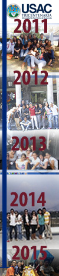

Organización académica y administrativa de la USAC |
|
|
En la actualidad la Universidad de San Carlos de Guatemala, ha alcanzado un desarrollo organizativo que demanda políticas, estrategias y acciones de descentralización y desconcentración académico-administrativas, con el propósito de fortalecer su cobertura en cumplimiento a su misión institucional, lo cual conlleva que las instancias técnico-administrativas de la administración central de la Universidad, propicien que las facultades, escuelas y principalmente, los centros regionales universitarios por su ubicación geográfica, desarrollen sus propios procesos. |  |
Una travesia por el tiempo. Facultad de Arquitectura USAC |